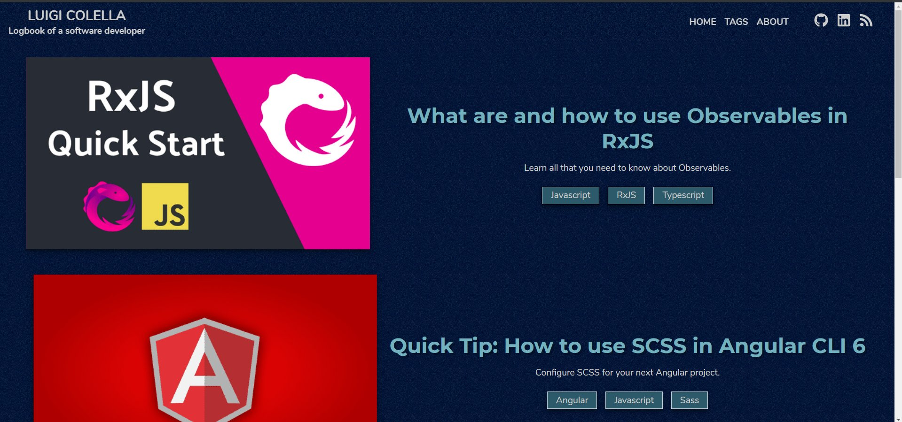
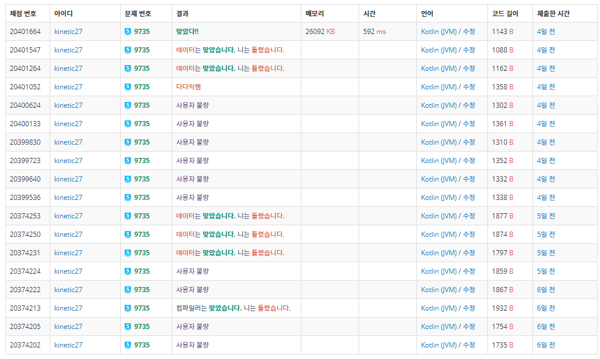
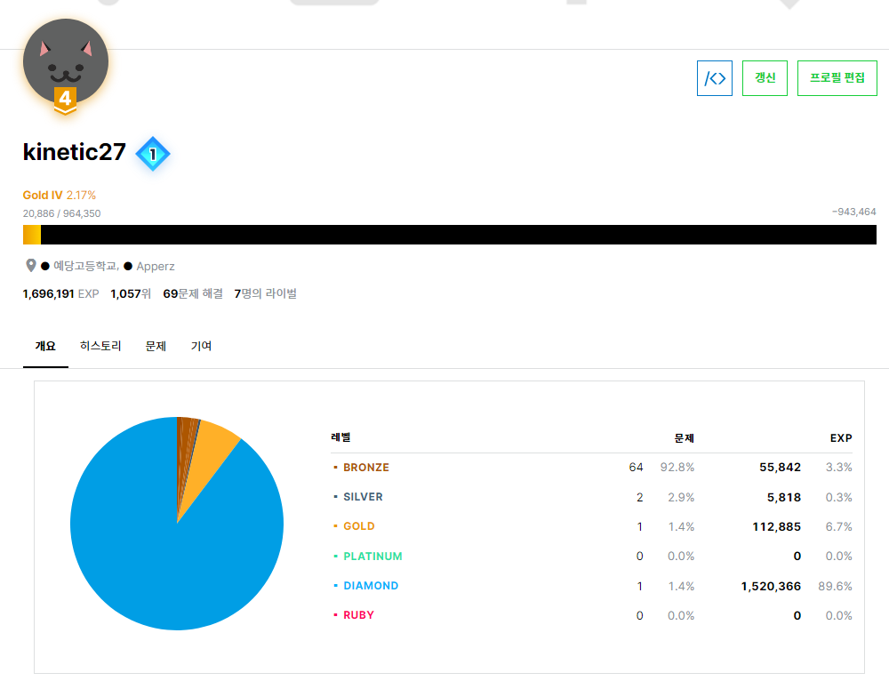

🐑블로그 개선후기, 🎉Solved.ac 골드 달성
[잡담] 블로그 개선, 솔브드 골드 달성🎉
블로그 개선
한동안 코로나 여파와 지필고사 준비 때문에 블로그쪽은 신경을 많이 못썼습니다.
블로그에 현재 Icarus테마를 사용하고있는데 문제가 생겼습니다.
Icarus테마가 원래는 2.0버전으로 다른 헥소 테마와 마찬가지로 ejs로 구성이 되어있었는데요.
3.0 소식이 뜨더니 JSX와 Inferno.js기반으로 싹 다 레이아웃을 갈아엎었더군요.
즉, 예전에 썼던 Hexo Blog 설치글이 먹히지 않는다는 소식이었습니다.
다행히 2.0버전을 아직도 배포는 하고있기에 임시 방편으로 2.0으로 사용하라고 적어두긴 했습니다만 찜찜해서 제가 3.0을 적용해보려고했습니다.
Gatsby로?
사실 웹 지식이 많이 없는지라 Icarus 3.0에 지금과 같은 블로그를 다시 만들 수 없을 줄 알고 요즘 유행같아보이는 Gatsby를 설치해서 Hexo 대신 사용해보려고 했습니다.
근데 Gatsby는 웹 프론트엔드에 관한 지식이 없으면 미리 만들어진걸 받아서 해야하는데
괜찮은 스타터 테마들은 Gatsby버전이 바뀌면서 호환 문제가 생기거나 5시간째 이미지를 프로세싱하는 무한 로딩 오류가 뜬다던지(…)
결국 이슈하나 던져두고 괜찮은 다른 테마 하나 건져서 설치까지는 해놨지만 역시 Hexo Icarus가 너무 강력하더군요

다시 Icarus 3.0으로
그래서 시험도 끝났겠다 예전에 포기했던 3.0버전을 적용하려 다시 Icarus 테마 적용을 시도했습니다.
우선 제일 크게 바뀐점은 ejs -> jsx로 이전에 포스팅했던 플러그인들이 먹지 않습니다…
저기에 소개한 플러그인은 제 예전 2.0 블로그에 전부 적용해뒀었는데요.
- hexo-autonofollow
- hexo-auto-canonical
- hexo-generator-seo-friendly-sitemap
- hexo-generator-feed
- hexo-related-popular-posts
- hexo-generator-robotstxt
- hexo-asset-link
이 중 hexo테마에 직접 코드를 추가해서 적용했던 hexo-related-popular-posts와 hexo-auto-canonical이 문제가 된겁니다.
관련 포스트 기능은 우선 사용을 해제한 상태고 auto-canonical같은 경우는 이미 hexo테마에서 어느정도 커버를 쳐주는것 같아서 빼기로했습니다.
사실 이 두개는 현재 icarus 3.0에와서 큰 문제는 없는 것 같더라고요.
문제가 생기면 추후에 다시 알아봐야겠습니다.
그리고 화면 우측 아래에 띄워진 Live2d도 그대로 HTML코드에 심어주고 styl파일에 커스텀 info 임베딩도 추가했습니다.
이 작업을 끝내고 보니까 Icarus도 미안했는지 이번 업데이트에 사이버 펑크 테마를 추가해줬더라고요.
그래서 냅다 적용을 해봤습니다.
다행히 현재 낮/밤 모드를 icarus에서 fork해서 작업물을 공유해주시는 분이(아마 Icarus 제작자분중 한분) 발빠르게 낮/밤기능을 넣어주셔서 보기 싫으면 밤모드를 쓰면 되는 관계로 현재 제 블로그는 사이버펑크/밤으로 셋팅이 되어있습니다만 밤모드에 일부분 사이버 펑크 테마가 묻어있네요.
결국 현재 보시는것과 같은 블로그가 완성되었습니다!🎊🎉✨
Solved.ac
사실 이번에 하고 싶었던 것 중 하나가 알고리즘 공부하기였습니다.
프로젝트 보다도 가볍게 시작할 수 있고 짧은 문제는 금방 풀리는 장점덕에 공부하면서 틈틈히 시도할 수 있고, 마침 집에 종만북 1, 2를 사두고 조금 읽은지라 마저 읽으면서 진행하려던 찰나, https://solved.ac/가 알파버전이 릴리즈되어서 당장 가입하고 백준과 연결했습니다.
솔브드는 백준과 연동하여 문제들에 태그와 난이도를 붙여주는데 특히 푼 문제에 기반하여 경험치를 주고 이를 게임처럼 랭킹으로 보여주는것이 인상깊었습니다.
저는 쉬운 브론즈 문제 그것도 5티어 문제를 50문제쯤 풀어두고 실버1문제, 골드1문제가 풀려있는 상태여서 처음에는 실버 5티어였습니다.
그러던 와중에 다이아 문제 하나를 우연히 SNS에서 보게되었는데 이게 고등학교 수학을 이용하면 저도 풀 수 있겠더라고요.
그래서 고인물님이 주신 힌트(고등 수학으로 가능하다)를 듣고 Kotlin으로 2일동안 삽질을 한 결과…

결국 이 문제를 풀었습니다.
나중에 풀이 글을 쓸 예정입니다.
티어별로 주는 경험치가 확 차이나다 보니까 다이아5문제를 푸니까 순식간에 골드로 승급했습니다!🎉🎉🎉🎉

앞으로도 틈틈히 ps를 열심히 공부해서 골드 3을 넘어서 플레까지 가고싶네요.
그럼 오늘도 늦었으니 자러가보겠습니다.👋(4시)